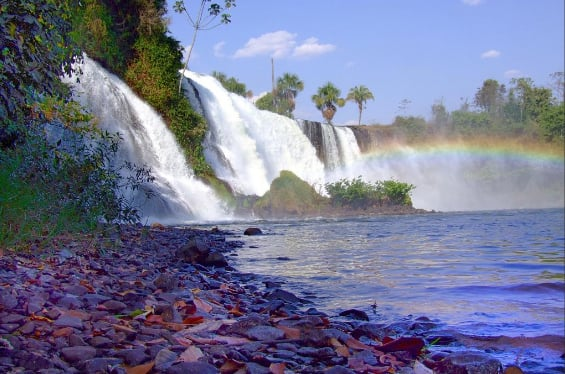

Transparencia
Rendir cuentas es parte de nuestro compromiso. Aquí están reunidos los documentos oficiales y la información pública del IPAC.
Constitución y registro
- Ver / descargar
Estatuto Social
Versión consolidada registrada en el 2.º Oficio de Tangará da Serra el 03/04/2025 · PDF, 0,6 MB
- Ver / descargar
Acta de fundación, aprobación del Estatuto, elección y asunción del Directorio
Asamblea del 25 de junio de 2004 · PDF, 0,9 MB
- Ver / descargar
Primera modificación del Estatuto Social
Tangará da Serra, 15 de agosto de 2013 · PDF, 5,8 MB
- Ver / descargar
Constancia de inscripción en el CNPJ
CNPJ 07.231.069/0001-75 · situación activa · emitida el 23/09/2024 · PDF, 108 KB
Gobernanza
- Ver / descargar
Acta de elección y asunción del Directorio
Registrada en el 2.º Oficio de Tangará da Serra el 09/10/2025 · PDF, 3,0 MB
- pendiente
Composición del Directorio y de los Comités
También en la página Comités
Informes de actividades
- pendiente
Informe anual de actividades
Por año de referencia
Rendición de cuentas
- pendiente
Estados contables / balance
Por ejercicio, cuando existan
- pendiente
Dictamen del Consejo Fiscal
Si lo prevé el estatuto
- pendiente
Rendiciones de cuentas de alianzas y convenios
Por proyecto, cuando haya recursos públicos o de terceros
Títulos y certificaciones
- Ver / descargar
Utilidad Pública Municipal
Cámara de Concejales de Tangará da Serra – Ley Ordinaria n.º 5.327, del 30 de junio de 2020 · PDF, 70 KB
- Ver / descargar
Utilidad Pública Estatal
Ley Estatal n.º 11.403, del 01/06/2021 (Asamblea Legislativa de Mato Grosso) · PDF, 52 KB
Políticas institucionales
- Leer política
Política de privacidad del sitio
Cómo tratamos los datos enviados por los formularios (LGPD)